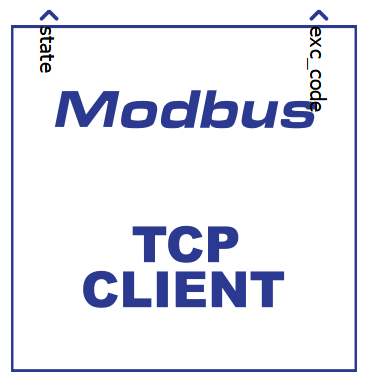
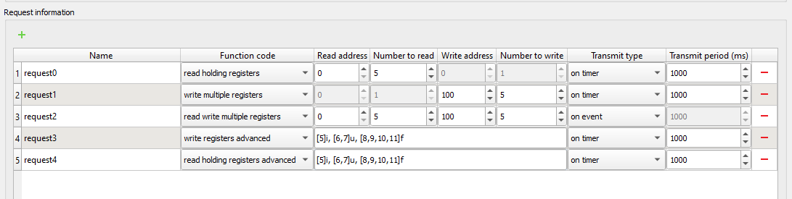
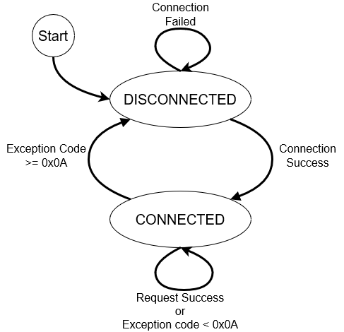

Modbus Client
Description of the Modbus Client component in Schematic Editor.
Introduction to Modbus protocol
Modbus is an industrial serial communication protocol standard that has been in use for many years. The protocol defines function codes and an encoding scheme for transferring data mostly as either single points (1-bit) or as 16-bit data registers. Besides basic 16-bit registers Typhoon HIL Modbus Client supports reading and writing both 32-bit and 64-bit registers. This basic data packet is then encapsulated according to the protocol specifications for Modbus ASCII, RTU, or TCP. Modbus/TCP protocol is implemented in the Typhoon HIL toolchain.
Modbus is defined as a master/slave protocol, meaning a device operating as master will poll one or more devices operating as a slave. This means a slave device cannot willingly send information, it must wait to be asked for it. The master will write and read data to a slave device’s registers.
Modbus/TCP makes the definition of master and slave less obvious because Ethernet allows peer to peer communication. The definition of client and server are better known entities in Ethernet based networking. In this context, the slave becomes the server and the master becomes the client.
Four types of registers are defined in Modbus protocol and they are listed in Table 1.
| Register type | Access | Size |
|---|---|---|
| Coil (Discrete output) | read/write | 1 bit |
| Discrete input | read only | 1 bit |
| Input registers | read only | 16 bits |
| Holding registers | read/write | 16 bits |
Modbus protocol defines a set of functions that can be performed on registers. Functions that are supported in the Typhoon HIL toolchain are listed in Table 2.
| Function type | Function name | |
|---|---|---|
| Data Access | 1-bit access | Read Discrete Inputs |
| Read Coils | ||
| Write Single Coil | ||
| Write Multiple Coils | ||
| 16-bit access | Read Input Registers | |
| Read Holding Registers | ||
| Write Single Holding Registers | ||
| Write Multiple Holding Registers | ||
| Read/Write Multiple Registers | ||
| 16 - 64 bit access | Read Input Registers Advanced | |
| Read Holding Registers Advanced | ||
| Write Registers Advanced | ||
Modbus protocol is supported by the following Typhoon HIL devices: HIL402, HIL101, HIL404, HIL602+, HIL604, HIL506, and HIL606.
Modbus Client component

The Modbus Client component, which can be found under the Communication tab, implements Modbus TCP Client (Master) functionality. It works with registers defined according to Modbus protocol, 1 bit to 64 bit (signed, unsigned, float and double) registers.
The Modbus Client component has the following configuration options:
- Client Setup
- Ethernet port
- Select the Ethernet port on the back of the HIL device used by the Modbus Client application. For 4th generation devices (HIL101, HIL404, HIL506, and HIL606), any available port can be used for communication, while older devices only support communication over port 1.
- Client IP address
- Specify the Modbus Client IP address. The defined IP address will be applied to the HIL Device and it will use the specified address to connect to the Modbus Server.
- Client Netmask
- Specify the netmask of the Modbus Client component.
- Client Gateway
- Available if the Gateway enable checkbox is checked.
- Specifies the Gateway IP address.
- Gateway enable
- Check if connection to the Modbus Server occurs over a gateway.
- Ethernet port
- Server Setup
- Server IP address
- Specify the IP address that the Modbus Client will try to connect to.
- Server Port
- Specify the Port number that the Modbus Client will try to connect to.
- Slave ID
- Specify the Slave ID of the Modbus Client component. Although Modbus TCP defines that the Slave ID should be 255, you can define this value if a specific ID is required (usually when using Modbus TCP to RTU converters).
- Server IP address
- Request timeout
- Specify the time that the Client waits for the Server response, in milliseconds.
- Execution rate
- Specify the execution rate of the component. This is a Signal Processing execution rate, and should be compatible with the rest of the schematic.
- Request information
- This table is used to define all the requests that the Client will send to the Server. Parameters like function code, register address, register numbers, and request sending event can be specified. Detailed information about Client requests are presented in Request definitions.
Request definitions
- Name - unique name of the request. This name is used to define the input and output terminal names on the Client component.
- Function code - define the function that the request performs. Functions can
be:
- read coils
- read discrete inputs
- read holding registers
- read input registers
- write single coil
- write single register
- write multiple coils
- write multiple registers
- read write multiple registers
- read input registers advanced
- read holding registers advanced
- write registers advanced
- Read address - address value used for reading register values
- Number to read - number of registers to read
- Write address - address value used for writing register values
- Number to write - number of registers to write
- Register definition for "advanced" type function code is such that all numbers inside brackets represent groups of 16 bit registers reserved for that variable (max. 4 numbers or 64 bits) and the letter besides it represents the type of variable (i-int, u-unsigned int, f-float for 32 bit and double for 64 bit register group). For example [0,1,2,3]f represents a variable of type double that resides on the 0,1,2,3 16-bit registers. It is important to define registers in ascending order. More information can be found in the Defining the addresses for Holding and Input registers of the Modbus Device documentation.
- Transmit type - defines the event when each request is sent. The Transmit
type can be:
- on event - if selected, additional terminal on the component is created that lets you connect the event signal
- on timer
- on event and on timer - if selected, additional terminal on the component is created that lets you connect the event signal
- Transmit period - lets you define the request sending period (in ms)
An example of request definition is presented below which creates the component connections shown in Figure 3.

As per request definitions, additional terminals are created on the component. For each function code that performs a read function, an output terminal is created, and for each function code that performs a write function, an input terminal is created. The logic behind this is that a read function retrieves the value from the Modbus Server and these values should be used in the model for control. The write function should use values from the model to send to the Server.
For the requests that are sent on event, an additional terminal is created on top of the component that allows a signal to be connected to it. Any value change on this terminal is treated as an event.
State and Exception code terminals
State and Exception code terminals are always present on the Modbus Client component.
The State port reflect the Client's connection to the Server. If the Client is connected to the server, the value of this signal is 1, otherwise is 0.
- 0x01 - Illegal Function
- 0x02 - Illegal Data Address
- 0x03 - Illegal Data Value
- 0x04 - Server Device Failure
- 0x05 - Acknowledge
- 0x06 - Server Device Busy
- 0x08 - Memory Parity Error
- 0x0A - Gateway Path Unavailable
- 0x0B - Gateway Target Device Failed to Respond
On the meaning of specific Exception codes, please refer to the Modbus protocol specification.
Modbus Client state machine
Modbus Client implements a simple state machine with two states: DISCONNECTED and CONNECTED. The following block diagram defines the state machine:

At the beginning of the simulation, the Client is in the DISCONNECTED state. It tries to connect to the Server and if it succeeds, the client goes to the CONNECTED state. If the connection fails, the Client will continuously try to reconnect with the period defined by the Request timeout value. When the Client connects, the State value changes from 0 to 1.
In the CONNECTED state the Client continuously sends the requests to the Server. In case of an invalid request, the Server will return an Exception Code. If the value of the Code is less than 0x0A, the Client stays in the CONNECTED state and continues sending the requests. If the value of the Code is equal to or greater than 0x0A, the Client goes to the DISCONNECTED state and tries to reconnect to the Server.
Changing Modbus Client property values using Schematic API
The custom component dialog is designed to easily define the Modbus Client connection parameters and to define requests. Changing these values is also possible using standard Schematic API functions but in a modified way. Namely, all properties except Request information are changed in the standard way, where Request information must be specified as a list of Python dictionary types.
| Field name | Allowed values |
|---|---|
| "name" | ASCII string |
| "function_code" | 0x1, 0x2, 0x3, 0x4, 0x5, 0x6, 0xF, 0x10, 0x17, "read coils", "read discrete inputs", "read holding registers", "read input registers", "write single coil", "write single register", "write multiple coils", "write multiple registers", "read write multiple registers", "write registers advanced", "read input registers advanced", "read holding registers advanced" |
| "read_address" | 0 - 65535 |
| "number_of_registers_to_read" | The value depends on the specified function code:
|
| "write_address" | 0 - 65535 |
| "number_of_registers_to_write" | The value depends on the specified function code:
|
| "register_specification" | The value is used for "write registers advanced", "read input registers advanced" and "read holding registers advanced" function codes to define the list of registers to access. The value is defined in the Request definitions section. |
| "transmit_type" | "on event", "on period", "on event and on period" |
| "transmit_period" | 1 - 1800000 |
requests = [
{"name": "request0", "function_code": "read holding registers", "read_address": 0, "number_of_registers_to_read": 5, "transmit_type": "on timer", "transmit_period": 1000},
{"name": "request1", "function_code": "write multiple registers", "write_address": 100, "number_of_registers_to_write": 1, "transmit_type": "on timer", "transmit_period": 1000},
{"name": "request2", "function_code": "read write multiple registers", "read_address": 0, "number_of_registers_to_read": 5, "write_address": 100, "number_of_registers_to_write": 1, "transmit_type": "on event", "transmit_period": 1000},
{"name": "request3", "function_code": "write registers advanced", "register_specification": "[5]i, [6,7]u, [8,9,10,11]f", "transmit_type": "on timer", "transmit_period": 1000},
{"name": "request4", "function_code": "read holding registers advanced", "register_specification": "[5]i, [6,7]u, [8,9,10,11]f", "transmit_type": "on timer", "transmit_period": 1000}
]
mdl.set_property_value(mdl.prop(modbus_client, "requests"), requests)Virtual HIL support
Virtual HIL currently does not support this protocol. When using a non-real-time environment (e.g. when running the model on a local computer), inputs to this component will be discarded and outputs from this component will be zeroed.